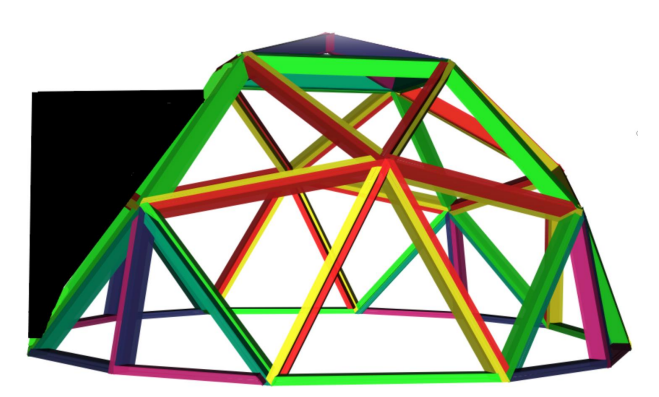
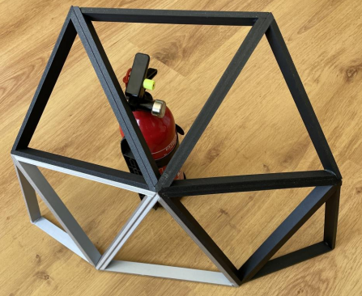
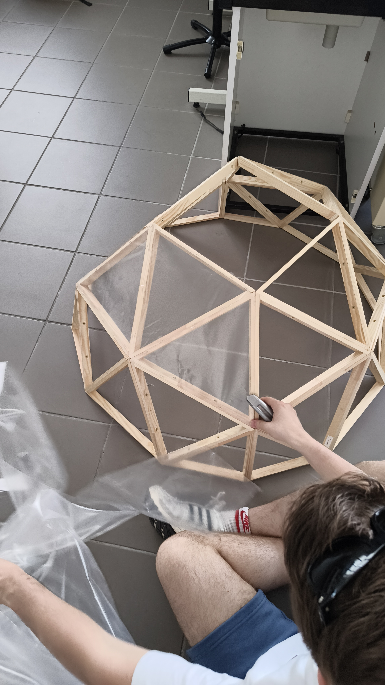
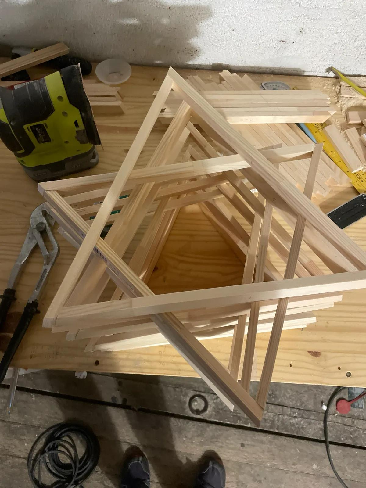
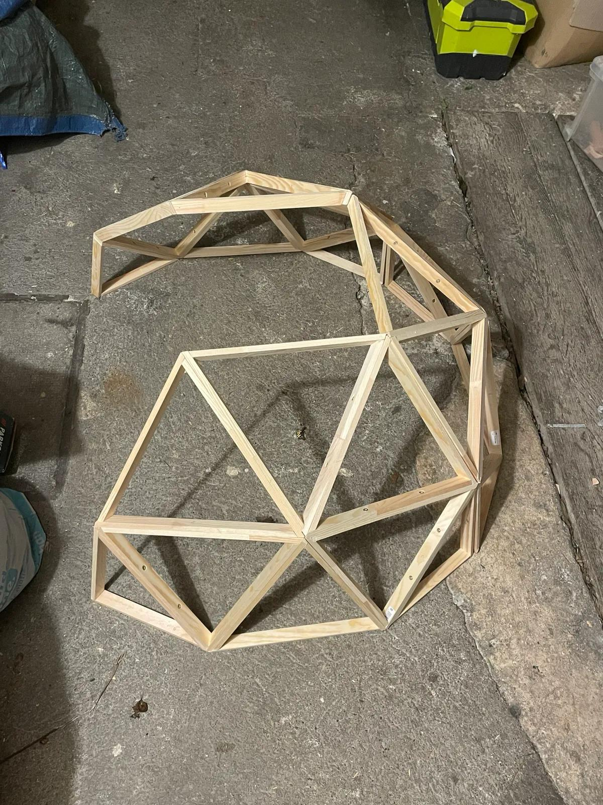
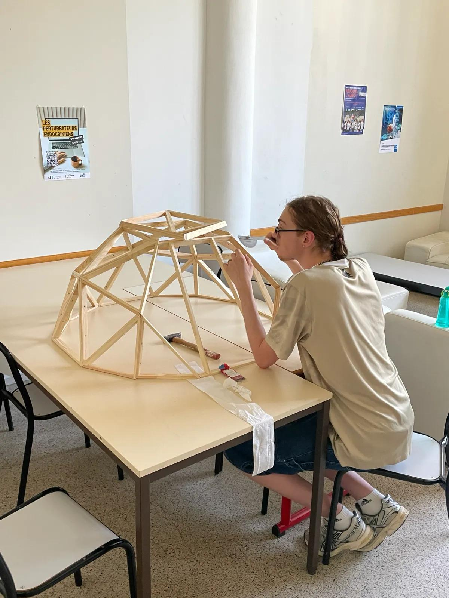

Objectif
Concevoir et fabriquer l'enveloppe physique d'une serre connectée (Ø 1 m, hauteur 50 cm) optimisée pour la régulation thermique et l'intégration de capteurs.

🔹 1. Choix géométriques & avantages physiques
- Structure : Dôme géodésique basé sur un réseau de pentanoïdes.
- Volume utile maximal : La forme sphérique maximise le volume intérieur tout en minimisant les surfaces d’échange thermique.
- Résistance mécanique : Répartition homogène des contraintes (compression + tension) assurant une forte stabilité.
- Aérodynamisme : Absence d'angles droits favorisant une circulation naturelle et homogène de l'air.

🔹 2. Démarche de conception & prototypage
- Trigonométrie numérique : Calcul des arêtes et angles complexes (double inclinaison).
- Prototypage : Maquette à 75 % imprimée en 3D (PLA).
- Validation : Test de l’assemblage et support pour l’intégration électronique.

🔹 3. Fabrication & innovation structurelle
- Assemblage "Good Karma" : Croisement direct des tasseaux sans connecteurs externes.
- Usinage précis : Découpe millimétrique + fixation colle à bois et vis acier.
- Structure modulaire : Base, flancs et dôme assemblés séparément puis réunis.
🔹 4. Aménagements fonctionnels & finitions
- Porte latérale : Accès simple à l’intérieur.
- Trappe automatique : Ouverture via servomoteur.
- Température > 28°C
- CO₂ > 1500 ppm
- Enveloppe thermique : Bâche plastique haute densité découpée selon les triangles pour une tension sans plis.




Valeur ajoutée du projet
Ce projet combine modélisation mathématique, fabrication mécanique et intégration de systèmes connectés pour créer une solution complète et optimisée de culture contrôlée.